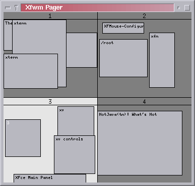

- Clicking on a desktop with mouse button 1 (left button by default) will move the viewport to the corresponding desktop.
- Windows can be dragged from a desktop to another using the mouse button 2 (middle) or 3 (right)
The XFce pager provides a miniature view of all XFwm desktops.
1) The main concept
XFPager must be started as a module (ie from XFce or XFwm using the keyword "Module") to initiate the communication pipe with XFwm.
XFPager is able to receive and send events to windows running on each XFwm desktop. If you move a window on the screen, its image will be moved in XFPager, and if you move a window in the pager, the windows will be moved on the screen accordingly.
By default, XFPager will manage the default 4 screens of XFce, but it can also manage up to 32 screens !
2) The user interface
XFPager must be started from XFwm or XFce by using Module xfsound:

User can specify the number of desktops that XFPager has to manage.
By default, XFPager displays the screens 1 to 4. But if someone needs more
than 4 desktops, XFPager is able to use up to 32 screens.
You can specify the default number of screens from the command line
:
- Module xfpager 8
will start xfpager with 8 screens.
3) More configuration options
The options have to be added to XFwm system configuration file system.xfwmrc (also called sample.xfwmrc or .xfwmrc)
*xfpager.geometry geometry
- Specifies the pager windows location and geometry, in standard
X11 notation.
- Specifies a size (optional) and location (optional) for the pager's
icon window.
- Specified a font to use to label the desktops. If font_name
is "none" then no desktop labels will be displayed.
- Specified a font to use to label the window names in the
pager. If not specified, the window labels will be omitted.
- Assigns the text label to desk desk in the pager
window. Useful for assigning symbolic names to desktops.
4) Starting XFPager automatically
XFPager is started by the reserved functions "InitFunction" and "RestartFunction" in system.xfwmrc.
If you have a customized version of system.xfwmrc (also called sample.xfwmrc
or .xfwmrc), you need to add the following sentences to your system.xfwmrc
configuration file :
| AddToFunc "InitFunction"
+ "I" Module xfpager AddToFunc "RestartFunction"
|